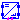
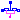
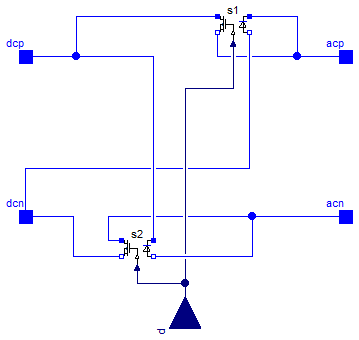
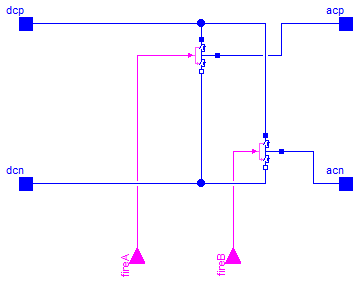
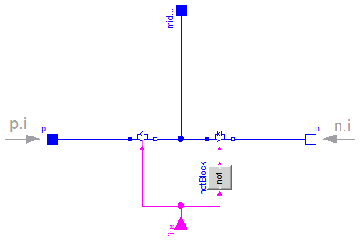
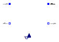
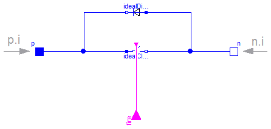
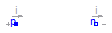

Library for electrical models
Extends from Modelica.Icons.Package (Icon for standard packages).
| Name | Description |
|---|---|
| HBridgeAveraged | Basic ideal H-bridge topology (averaged) |
|  HBridgeSwitched | Basic ideal H-bridge topology (switched) |
|  Ideal2LevelLeg | Basic ideal two level switching leg |
| Average switch model for any ideal 2-switch PWM converter in CCM | |
| Average switch model for any ideal 2-switch PWM converter in DCM | |
| Basic two-cuadrant current bidirectional switch | |
| Flexible PV array model | |
| Partial model for battery | |
| Simple battery model | |
| Interfaces |
Basic ideal H-bridge topology (averaged)

This model further composes IdealAverageCCMSwitch to form a typical H-bridge configuration from which a 1-phase inverter can be constructed. This model is based in averaged switch models.
| Type | Name | Description |
|---|---|---|
| Pin | dcp | Positive pin of the DC port |
| Pin | dcn | Negative pin of the DC port |
| Pin | acp | Positive pin of the AC port |
| Pin | acn | Negative pin of the AC port |
| input RealInput | d |
Basic ideal H-bridge topology (switched)

This model further composes IdealTwoLevelBranch to form a typical H-bridge configuration from which a 1-phase inverter can be constructed. This model is based on discrete switch models.
| Type | Name | Description |
|---|---|---|
| Pin | dcp | Positive pin of the DC port |
| Pin | dcn | Negative pin of the DC port |
| Pin | acp | Positive pin of the AC port |
| Pin | acn | Negative pin of the AC port |
| input BooleanInput | fireA | |
| input BooleanInput | fireB |
Basic ideal two level switching leg

This model composes IdealCBSwitch model into a two level leg, also very common in the constructoin of power converters. It provides input only for the firing signal of the top switch, generating the firing signal for the bottom switch by logical negation.
Extends from Modelica.Electrical.Analog.Interfaces.TwoPin (Component with two electrical pins).
| Type | Name | Description |
|---|---|---|
| PositivePin | p | Positive pin Positive pin (potential p.v > n.v for positive voltage drop v) |
| NegativePin | n | Negative pin |
| input BooleanInput | fire | |
| Pin | midPoint |
 PVSystems.Electrical.IdealAverageCCMSwitch
PVSystems.Electrical.IdealAverageCCMSwitch
Average switch model for any ideal 2-switch PWM converter in CCM

Extends from Modelica.Electrical.Analog.Interfaces.TwoPort (Component with two electrical ports, including current).
| Type | Name | Description |
|---|---|---|
| PositivePin | p1 | Positive pin of the left port (potential p1.v > n1.v for positive voltage drop v1) |
| NegativePin | n1 | Negative pin of the left port |
| PositivePin | p2 | Positive pin of the right port (potential p2.v > n2.v for positive voltage drop v2) |
| NegativePin | n2 | Negative pin of the right port |
| input RealInput | d | Duty cycle |
PVSystems.Electrical.IdealAverageDCMSwitch
Average switch model for any ideal 2-switch PWM converter in DCM
Extends from Modelica.Electrical.Analog.Interfaces.TwoPort (Component with two electrical ports, including current).
| Type | Name | Default | Description |
|---|---|---|---|
| Inductance | Le | Equivalent DCM inductance [H] | |
| Frequency | fs | Switching frequency [Hz] |
| Type | Name | Description |
|---|---|---|
| PositivePin | p1 | Positive pin of the left port (potential p1.v > n1.v for positive voltage drop v1) |
| NegativePin | n1 | Negative pin of the left port |
| PositivePin | p2 | Positive pin of the right port (potential p2.v > n2.v for positive voltage drop v2) |
| NegativePin | n2 | Negative pin of the right port |
| input RealInput | d | Duty cycle |
Basic two-cuadrant current bidirectional switch

This model represents and idealized current bi-directional switch. This is the typical IGBT in anti-parallel with a diode from which many converters are built.
Extends from Modelica.Electrical.Analog.Interfaces.TwoPin (Component with two electrical pins).
| Type | Name | Description |
|---|---|---|
| PositivePin | p | Positive pin Positive pin (potential p.v > n.v for positive voltage drop v) |
| NegativePin | n | Negative pin |
| input BooleanInput | fire |
Flexible PV array model

Flexible PV array model. The model can be parametrized with the use of PV module datasheets. As a default, the data from the Kyocera KC200GT is provided. The model is presented in "Comprehensive Approach to Modeling and Simulation of Photovoltaic Arrays" by M.G. Villalva et al.
Extends from Modelica.Electrical.Analog.Interfaces.OnePort (Component with two electrical pins p and n and current i from p to n).
| Type | Name | Default | Description |
|---|---|---|---|
| Current | Imp | 7.61 | Maximum power current [A] |
| Voltage | Vmp | 26.3 | Maximum power voltage [V] |
| Current | Iscn | 8.21 | Short circuit current [A] |
| Voltage | Vocn | 32.9 | Open circuit voltage [V] |
| Real | Kv | -0.123 | Voc temperature coefficient |
| Real | Ki | 3.18e-3 | Isc temperature coefficient |
| Real | Ns | 54 | Number of cells in series |
| Real | Np | 1 | Number of cells in parallel |
| Resistance | Rs | 0.221 | Equivalent series resistance of array [Ohm] |
| Resistance | Rp | 415.405 | Equivalent parallel resistance of array [Ohm] |
| Real | a | 1.3 | Diode ideality constant |
| Current | Ipvn | Iscn | Photovoltaic current at STC [A] |
| Type | Name | Description |
|---|---|---|
| PositivePin | p | Positive pin (potential p.v > n.v for positive voltage drop v) |
| NegativePin | n | Negative pin |
| input RealInput | G | Solar irradiation |
| input RealInput | T | Panel temperature |
 PVSystems.Electrical.PartialBattery
PVSystems.Electrical.PartialBattery
Partial model for battery

Partial model for battery
Extends from Modelica.Electrical.Analog.Interfaces.OnePort (Component with two electrical pins p and n and current i from p to n).
| Type | Name | Description |
|---|---|---|
| PositivePin | p | Positive pin (potential p.v > n.v for positive voltage drop v) |
| NegativePin | n | Negative pin |
PVSystems.Electrical.SimpleBattery
Simple battery model
Extends from PartialBattery (Partial model for battery).
| Type | Name | Default | Description |
|---|---|---|---|
| Resistance | Rint | 0.09 | Internal resistance [Ohm] |
| Voltage | E0 | 3.7348 | Constant battery voltage [V] |
| Voltage | K | 0.00876 | Polarization voltage [V] |
| Real | Q | 1 | Rated battery capacity [A.h] |
| Voltage | A | 0.468 | Exponential region amplitude [V] |
| Real | B | 3.5294 | Exponential zone time constant inverse |
| Real | DoDini | 0 | Initial Depth of Discharge [A.h] |
| Type | Name | Description |
|---|---|---|
| PositivePin | p | Positive pin (potential p.v > n.v for positive voltage drop v) |
| NegativePin | n | Negative pin |